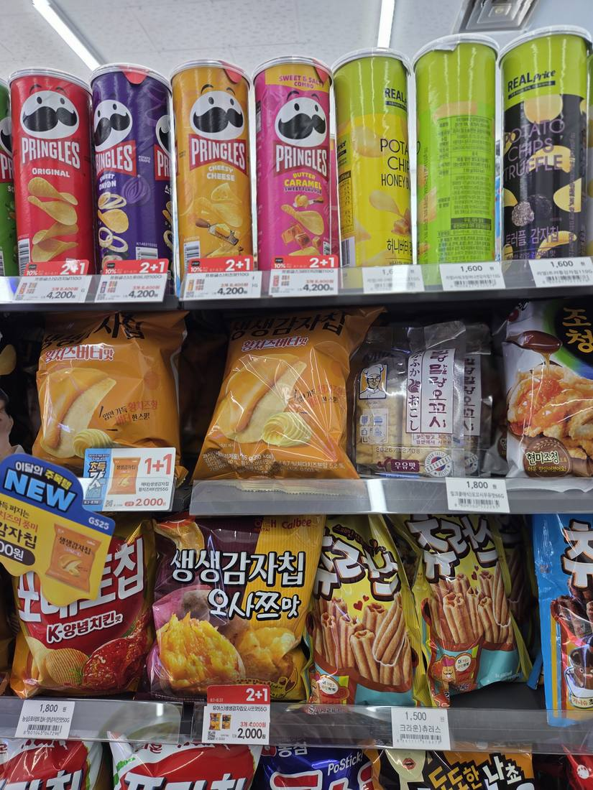

M2 재고 조기경보(Low Stock Alert) — 매대 촬영부터 AI 분석 → Facing 부족 SKU Highlight → 재고 데이터 확인(예시) → Alert 생성 → SV Action까지, 실제 재고/POS/ERP 연동 없이 서비스 동작 방식을 보여주는 목업이다. 완전 품절이 아니라 "품절이 되기 전" 조기 경보 시나리오다.
촬영 완료 · GS25 강남점 스낵 매대
사진 1장이 업로드되었습니다. AI가 재고 부족(Low Stock) 임박 SKU를 자동으로 탐지합니다.
AI 분석 중...
○이미지 인식
○Facing 카운트
○재고 부족 임박 탐지
○재고 데이터 대조
○Low Stock Alert 생성
재고 부족 임박 SKU 탐지

Pringles 사워크림&어니언 — Facing 2개로 기준(4개) 대비 부족하게 판단되어 재고 부족 임박으로 표시되었습니다. (예시 시나리오, 완전 품절 아님)
재고 데이터 확인
※ 실제 POS·ERP 연동 전 예시 데이터입니다
Pringles 사워크림&어니언
최근 입고일07/07 (예시)
현재 재고 (추정)8개 (예시)
최근 발주일07/05 (예시)
평균 일 판매량6개 (예시)
예상 소진 시점1~2일 내 (예시)
Low Stock 알림 (1건 신규)
Pringles 사워크림&어니언
탐지 방금 전 · 스낵 매대
신규
Pringles 핫&스파이시
가격표 인식률 저하(82%) · 재확인 필요
확인중
Pringles 프렌치어니언
완료 · Facing 보강 및 사진 인증됨
완료
SV Action
Pringles 사워크림&어니언 재고 부족 임박 건에 대해 담당 SV에게 조치를 요청합니다.